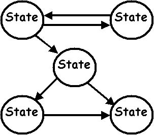
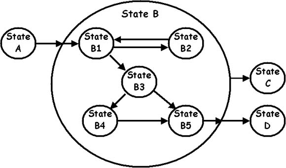

|
New version!
A new version of this website is available at architectural-patterns.net.
Maybe you want your system to behave differently at specific periods in the application's execution.
You can define different states the application may be in. You would have to define the conditions
that change the system from one state into the next. These systems have a predefined number of states
and hence are called Finite State Machines.
A system may have multiple Finite State Machines. Finite State Machines may be nested. If a state
is entered, it may mean you enter an initial state of the inner state machine as well.
The State defines the way the system acts at a certain time.
The State Transition defines when the system may change from one state into the next and what
immediate actions are taken at the time of the transition. A state transition must be defined for
every allowable transition between any two states.

Examples
- A coffee machine is the archetypal state machine.
- Games.
When should you use it?
Use a Finite State Machine architecture when your system should not perform the same behaviour all the time,
and there are a finite number of states the system can be in.
How does it work?
The state machine starts in some initial state. Every execution cycle or control cycle the following two
steps are executed:
- The state-specific code of the current state is executed.
- For every state transition starting from this state, the conditions are checked.
If all conditions match, the system changes to the new state.
When the system changes state, three types of code may be executed (in this order):
- Exit code, code belonging to the state that is exited.
- Transition code, code that belongs to a specific transition.
- Enter code, code that belongs to the state that is entered.
Remarks:
- If multiple transitions are possible in a single cycle, only one (the first encountered) should be chosen.
- The transition code, enter code, and exit code,
should be very short pieces of code. They should
be executed in the same execution cycle. It may not be possible that this code takes so long that
the state machine changes to a different state while this code is executed. If it does, a new state
should be created for it.
In a hierarchical state machine a state B may itself be described by an entire state machine.
A hierarchical state machine allows for three kinds of state transitions not found in simple
state machines:
- Entering a state machine.
E.g. State A -> State B1.
State B has become the active state
in the outer state machine. If a state machine becomes active, it automatically places itself
in its initial state, which is B1 in this picture.
The exit code of A is executed,
followed by the transition code of the transition A->B,
followed by the enter code of B,
followed by the enter code of B1.
- The outer state machine leaves the state containing the inner state machine.
E.g. State B -> State C.
The conditions for the transition B->C match, so the outer state machine changes state. Any state
the inner state machine might have had is lost.
The exit code of the inner state is executed,
followed by the exit code of B,
followed by the transition code of the transition B->C,
followed by the enter code of C.
- The inner state machine's state changes to the outer state machine's state.
E.g. State B5 -> State D.
The conditions for the transition B5->C match, so state B is left and state C is entered.
The exit code of B5 is executed,
followed by the exit code of B,
followed by the transition code of the transition B->D,
followed by the enter code of D.

It is even possible to have more than one Finite State Machine in a single state. These all become
active whenever the super state becomes active. This creates the problem of what should happen when
a state transition of an inner state to a new outer state becomes possible.
The outer state is only really left (execution of transition code) when all inner state machines
can transfer into the same outer state in the same cycle.
Special state transitions:
- Conditionless transitions. A conditionless transition is always performed immediately.
In the previous picture the transition B5->D would likely be conditionless. It is the endstate
of the inner state machine, so there's no use remaining in this state.
- Timeouts. A transition may occur after some predefined time has elapsed.
Your system may also have a number of Finite State Machines, each used for a different job.
It is entirely possible that transition code of one FSM sends an event to another FSM,
which changes its state.
Advanced state machines may keep track of how much time was spent in each state, if a state is entered
for the first time, log changes for debugging, etc.
Common implementation techniques
- The identifier of the state can be an enumeration type or the name of the state.
Links
|
|